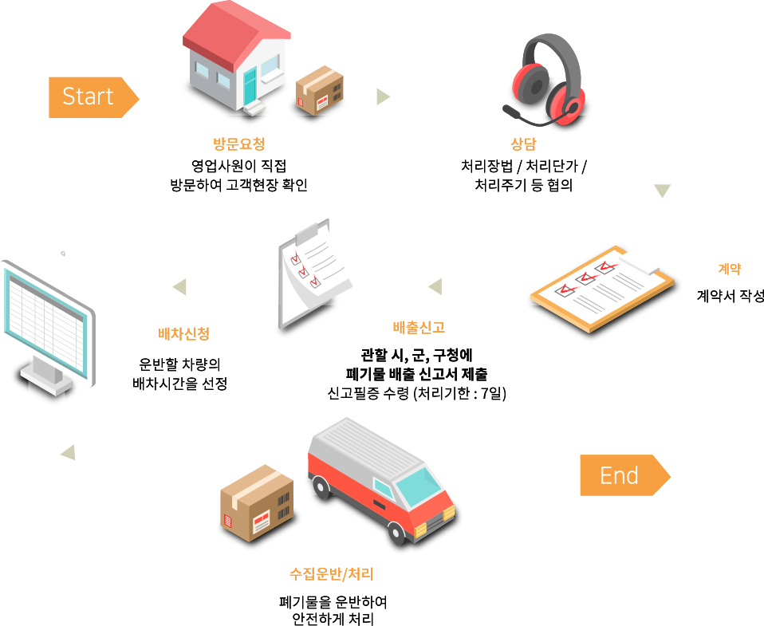
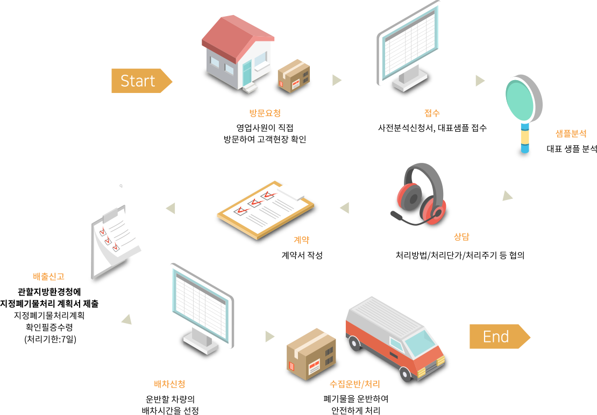

일반 폐기물이란?
산업현장에서 발생되는 비닐, 목재, 섬유, 종이,오니 등 특정유해물질이 포함되지 않은 산업폐기물입니다.
서비스분야
- 폐합성수지, 폐합성고무, 폐지, 폐목재, 폐섬유, 동·식물성 잔재물, 폐유리섬유, 폐식용유, 그리고 환경부령이 정하는 물질을 함유하지 않은 폐수처리오니, 공저오니, 폐촉매, 폐흡착제 및 폐흡수제 등
- 일반폐기물 처리에 관한 솔루션 제공
소각시설
일반산업쳬끼물은 본사와 국내 유수업체가 협력하여 만든 Stoker type의 소각로 (96톤/일x2)에서 처리하고 있습니다. 본 소각로는 완전연소뿐 아니라, 가스집진 시설을 설치하여 2차 오염원인 다이옥신이 저감되고 중금속 및 기타 유해가스 발생이최소화될 수 있도록 환경 친화적으로 설계되어 있습니다.
또한 소각과정에서 발생하는 열을 이용하여 신재 생에너지 (증기)를 생산하고, 생산된 스팀에너지는 자체 생산 공정에 사용후 잔량은 전량 공단내 입주업체에 저렴하게 공급하여 기업경쟁력을 높이고, 에너지 절약, 온실가스 감축에도 이바지하고 있습니다.
처리절차
- 방문요청 : 영업사원이 직접 방문하여 고객현장 확인
- 상담 : 처리방법 / 처리단가 / 처리주기 등 협의
- 계약 : 계약서 작성
- 배출신고 : 관할 시, 군, 군청에 폐기물 배출신고서 제출 신고필증 수령(처리기한 : 7일)
- 배차신청 : 운반할 차량의 배차시간을 선정
- 수집운반 / 처리 : 폐기물을 운반하여 안전하게 처리
지정 폐기물이란?
사장폐기물 중 심각한 유해 성분을 지니고 있어 주변 환경을 오염시키거나 인체에 해를 끼칠 수 있는 폐기물입니다.
서비스분야
- 폐합성수지, 폐합성고무, 폐농약, 폐산, 폐알카리, 폐유기용제, 페페인트 및 페락카, 폐유, 폐유독물, 그리고 환경부령이 정하는 물질을 함유한 폐수처리오니, 공정오니, 광재, 분진, 폐주물사, 폐사, 폐내화물, 도자기조각, 소각재, 안정화 또는 고형화 처리물, 폐촉매, 폐흡착제 및 폐흡수제 등
- 지정폐기물 처리에 관한 솔루션 제공
고온소각시설
지정산업폐기물은 본사와 스위스의 W&E사 및 국내 현대정공 합작으로 만든 국내 최초의 Rotary Kiln Type의 소각로(85톤/일)에서 처리하고있습니다.
이는 타 소각로에 비해 연소효율이 뛰어날뿐 아니라, 국내 산업폐기물 처리분야 최초로 완벽한 전처리 공정을 거쳐 지정폐기물에서 발생할 수 있는 유해물질이 선별 소각될 수 있도록 환경친화적으로 설계 되어 있습니다.
또한 소각 후 발생된 연소재가 슬래그화하여 노반재 및 벽돌 등을 제조하는 원료로 재활용 할 수 있고 연소과정에서 발생하는 열을 이용하여 신재생에너지를 생산함으로써 에너지 절감에 기여하고 있습니다.
처리절차
- 방문요청 : 영업사원이 직접 방문하여 고객현장 확인
- 접수 : 사전분석신청서, 대표샘플 접수
- 샘플분석 : 대표샘플 분석
- 상담 : 처리방법 / 처리단가 / 처리주기 등 협의
- 계약 : 계약서 작성
- 관할지방환경청에 지정폐기물처리 계획서 제출 지정폐기물처리계획 확인필증수령(처리기한 : 7일)
- 배차신청 : 운반할 차량의 배차시간을 선정
- 수집운반 / 처리 : 폐기물을 운반하여 안전하게 처리
폐수란?
물에 액체성 또는 고체성의 수질오염물질이 혼입되어 그대로 사용할 수 없는 물을 말합니다.
서비스분야
- 지정액상(폐산, 폐알카리), 약산폐수, 약알카리폐수, 도금폐수, 실험실폐수, 중금속폐수, 세관폐수, 인쇄세척수 등 수탁처리
- 폐수처리에 관한 솔루션 제공
처리시설
완벽한 시스템과 선진화된 기술을 활용하고 있는 폐수처리설비는 95% 이상의 높은 처리 효율과 인정적인 처리를 통해 2 차 오염이 최소화될 수 있도록 친환경적으로 설계되어 있습니다.
또한 폐수의 증발농축과정에서는 소각으로 회수한 신재생에너지를 사용하며 농축과정에서 발생된 용수는 전량 공정수로 재활용함으로써 수자원 절약에도 기여하고 있습니다.
처리절차
- 방문요청 : 영업사원이 직접 방문하여 고객현장 확인
- 접수 : 사전분석신청서, 대표샘플 접수
- 샘플분석 : 대표샘플 분석
- 상담 : 처리방법 / 처리단가 / 처리주기 등 협의
- 계약 : 계약서 작성
- 관할 시,군,군청에 폐수배출시설 설치허가 제출 신고필증수령(처리기한 : 7일)
- 배차신청 : 운반할 차량의 배차시간을 선정
- 수집운반 / 처리 : 폐기물을 운반하여 안전하게 처리
금속 재활용이란?
자동차 한 대를 만들기 위해서는 1.1톤의 금속이 필요합니다. 소각광재로부터 재활용하는 연간 2000톤 이상의 금속은
2000대에 달하는 자동차를 만들 수 있는 소중한 자원으로 활용되고 있습니다.
서비스분야
- 광재로부터 수거된 금속조각 판매
- 관련 정보제공 및 구입안내 서비스
수집운반이란?
배출 사업장에서 직접 폐기물을 수거하고 폐기물의 특성에 맞게 고안된 특수차량으로 일반폐기물, 지정폐기물, 폐수 등을
중간처리 및 최종처리 사업장으로 운반하는 서비스를 제공하고 있습니다. 특히 폐기물의 특성과 고객사의 보관용량,
그리고 보관기일 등이 고려된 수집운반시스템은 고객을 중시하는 특화 된 서비스입니다. 또한 정기적인 교육을 통해 훈련된 기사들이
고객사의 폐기물에 적합한 차량으로 신속하고 안전하게 운반함으로써 환경오염방지에도 최선을 다하고 있습니다.
서비스분야
- 일반폐기물, 지정폐기물, 폐수 등을 중간처리 사업장으로 수집운반 서비스
- 일반폐기물
- 폐합성수지, 폐목재, 폐섬유, 폐합성고무, 유기성 오니류, 동식물성잔재, 폐소금 등
- 지정폐기물
- 폐합성수지, 폐산, 폐알카리, 폐흡착제, 폐유,폐유기용제, 폐페인트, 폐농약, 유기성오니류등
- 폐수
- 도금폐수, 실험실폐수, 중금속폐수, 세관폐수, 인쇄세철수, 일반금속폐수, 기타일반폐수 등
- 계획된 시스템을 통해 찾아가는 수집운반 서비스
- 담당기사의 정기적 교육을 통해 안전하고 신속한 수집운반 서비스
- 해당 폐기물의 특성에 맞게 고안된 특수차량 제공 서비스
- 필요시 고객에 적합한 폐끼물 저장용기 무료대여 서비스